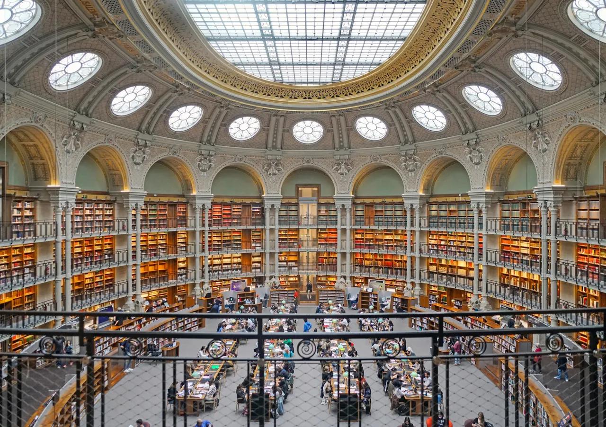

{kind=link}

Bourse de Commerce — Pinault Collection
옛 곡물거래소를 안도 다다오가 개조한 현대미술관이다

| 항목 | 값 |
|---|---|
| 접근 | Richelieu–Drouot 또는 Palais Royal |
| 관람 | Oval Room → Cour d'honneur → 서점·Passages 를 하나로 잇는다 |
| 체류 | 60–90분 |
| 요금 | Oval Room 무료. 박물관·전시는 유료 가능 (현행 확인) |
| 주의 | 열람 구역은 출입 제한이 있다 |
무료로 볼 수 있는 것이 핵심이다 저장소 자료가 Oval Room(타원 열람실)을 무료로 적고 있다. 이 방을 보는 것이 이 방문의 목적이고, 그 부분에는 돈이 들지 않는다. 다만 연구자 전용 열람 구역은 따로 있고 출입이 제한된다. 일반 관람 구역과 다르다.
파사주로 이어진다 서점과 파사주(passage)가 도보권이다. 오전 BnF 와 밤 필하모니 사이의 오후를 여기서 쓴다.
Day 33 (9/30 수)
프랑스 국립도서관의 옛 본관이다. 리슐리외 열람실이 핵심이다.
26. 도서관·서점에서 우선 추천으로 두었다.
미술관이 아니라 도서관이다
1720년대부터 왕립 도서관이 있던 자리로, 19세기에 앙리 라브루스트가 철골 기둥과 도자 돔 9개로 덮은 열람실(라브루스트 실)이 건축사 교과서의 한 페이지다.
이 체류에 미술관이 넷 있다. 여기는 성격이 다르다. 책과 공간을 보는 곳이다. Day 33 은 BnF 오전을 축으로 둔다. 필하모니는 일정에서 제외됐다(DEC-A04).
운영 화 10:00–20:00 · 수–일 10:00–18:00 · 휴관 월요일 휴관 (공휴일, 부활절·성령강림 일요일 휴관) 예약 예약 불필요 — 무료 자유 입장
옛 곡물거래소를 안도 다다오가 개조한 현대미술관이다

25.6 Centre Pompidou 대체로 두었다.

모네가 정원을 만들고 수련을 그린 마을이다.

폴 세잔이 한 세기가 넘는 예술 창작에 끼친 예외적 영향을 탐구하는 전시다.

'라틴'은 학생들이 라틴어로 말하던 동네라는 뜻이다

Day 30 (9/27 일) · Day 35 (10/2 금)